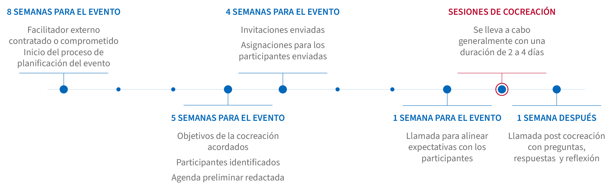

La cocreación es una herramienta clave para el relacionamiento que transforma la dinámica tradicional del desarrollo, convirtiendo a los participantes en protagonistas activos de su propio progreso. Este enfoque, que USAID ha adoptado como parte integral de su estrategia, permite que todos los actores involucrados establezcan prioridades, diseñen actividades y compartan responsabilidades en las inversiones y proyectos.
El trabajo colaborativo y su alcance - Pasos
Paso 4
Continuar el proceso de cocreación
La cocreación se desarrolla a lo largo de todos los pasos del proceso colaborativo con el sector privado, e integra a múltiples actores en un diálogo continuo y constructivo.
¿Qué es la cocreación?
En esencia, la cocreación es un proceso intencional y acotado en el tiempo que se centra en compartir el poder y la toma de decisiones para lograr resultados mutuamente beneficiosos. En el contexto específico de la relación con el sector privado, la cocreación crea una plataforma que ayuda a identificar áreas de interés mutuo y a establecer un lenguaje común entre los profesionales del desarrollo y las empresas. Al fomentar un sentido de propiedad compartida y compromiso mutuo, la cocreación fortalece la relación con el sector privado, lo que puede llevar a una mayor inversión y participación en iniciativas de desarrollo.
Los impactos de este enfoque son diversos y significativos, abarcando desde el fortalecimiento de la gobernanza local hasta el impulso del desarrollo social y económico con un enfoque territorial y diferencial. Un ejemplo concreto de estos impactos se puede observar en el Programa Juntanza Étnica en Colombia, que ha utilizado la cocreación para fortalecer la autonomía y la identidad de las comunidades étnicas en seis regiones del país, facilitando el reconocimiento de los gobiernos propios y la diversidad cultural.

Este caso, que les invitamos a explorar en el siguiente video, ilustra cómo la cocreación puede ser una poderosa herramienta para el cambio social y el desarrollo sostenible.
¿Cuáles son los aportes de la cocreación?
La cocreación tiene diversos aportes, estos son algunos de ellos:
Mejorar el entendimiento de los problemas
La cocreación ayuda a construir una definición sólida de los desafíos de desarrollo, reconociendo e integrando múltiples perspectivas, permitiendo una comprensión profunda del contexto, las necesidades y las capacidades de los actores involucrados.
Desarrollar nuevas ideas
Construir alianzas y fortalecer la confianza
Escuchar, involucrar y dar un lugar a cada actor permite crear alianzas basadas en la confianza. La cocreación fomenta un mayor sentido de apropiación y compromiso entre los socios, aumentando la responsabilidad y riesgo compartido del proyecto.
Incrementar la Adaptabilidad y Aprendizaje continuo
La cocreación fomenta un enfoque de aprendizaje continuo y adaptación. Permite ajustar las estrategias en función de resultados obtenidos, buenas prácticas y lecciones aprendidas, incrementando la sostenibilidad, relevancia y eficiencia de los programas frente a cambios y desafíos imprevistos.
Fomentar la Localización
Promover la Agenda de Localización en las conversaciones con otros actores, fomentando el liderazgo y la participación activa de los actores locales en el diseño e implementación de soluciones. El empoderamiento de actores locales asegura que las soluciones desarrolladas estén alineadas con las necesidades y realidades del contexto.
Definir y gestionar las dinámicas de poder
Comprender las diferencias que existen entre los actores y sus roles en este proceso, definiendo claramente sus intereses, niveles de involucramiento y procesos de toma de decisiones.
Optimizar recursos y maximizar el impacto
Al involucrar a múltiples actores desde el principio, se logra una mejor identificación y aprovechamiento de los recursos disponibles, evitando duplicaciones y maximizando el impacto de las intervenciones. Esto puede descubrir sinergias que no serían evidentes de otra manera.
¿Cuántas fases tiene el proceso de cocreación?
En el marco del relacionamiento con el sector privado, el proceso de cocreación puede tener las siguientes fases. Estas fases no son necesariamente lineales y pueden superponerse o repetirse según las necesidades del proceso:
Profundizar en la identificación de intereses comunes y aclarar los posibles aportes de cada actor involucrado. Se abordan preguntas como: ¿Cuáles son nuestros intereses frente a la resolución de problemas de desarrollo?, y ¿Qué aportes podemos realizar desde nuestras potencialidades? Aquí se explora cómo trabajar conjuntamente puede generar resultados que no serían posibles de manera individual.
Aplicar enfoques de mercado para identificar estrategias efectivas para resolver los desafíos identificados. Es el momento de preguntarse: “¿Qué estrategias podemos utilizar para resolver estos problemas o desafíos?” Esta fase implica una mayor profundización en las soluciones y métodos viables y se busca aprovechar las fortalezas del sector privado en la resolución de problemas.
Determinar roles y responsabilidades de todos los actores involucrados. Este es el momento de establecer un plan de acción claro y definido, asegurando que cada participante entienda su papel y las expectativas.
Formalizar los acuerdos alcanzados, estableciendo expectativas claras y metas compartidas.
La fase de implementación debe basarse idealmente en colaboración continua, la transparencia en las comunicaciones y el intercambio de información, la construcción de confianza, el compromiso y el aprendizaje continuo. Este paso asegura que la colaboración no se detenga en la planificación, sino que se mantenga viva y evolutiva durante todo el proyecto.
De manera transversal, el proceso de cocreación debe estar respaldado por una sólida estrategia de comunicación. Durante todo el proceso la comunicación debe ser horizontal, transparente y continua, alentando el intercambio de experiencias, información y conocimientos entre todos los actores involucrados. Esta comunicación puede realizarse a través de múltiples canales, adaptándose a las necesidades y capacidades de los diferentes participantes. Basada en el consenso y la confianza mutua, esta estrategia promueve una cultura participativa y dinámica, vital para el éxito del proceso de cocreación (Navarro (n.d). p. 102). Mantener una comunicación activa no solo permite la integración de los actores convocados, sino que también dinamiza su participación, reforzando su rol como agentes activos en el proceso de cocreación.
¿Cómo se puede implementar?
Las prácticas de cocreación pueden implementarse mediante una metodología híbrida, que combine sesiones virtuales y presenciales. Esta flexibilidad facilita el encuentro y la construcción conjunta de conocimientos entre los participantes, permitiendo además la participación remota de actores clave. Una buena práctica es tener un facilitador que fomente el diálogo y aprendizaje colaborativo.
¿Cuánto tiempo requiere la planeación de una sesión de cocreación?
La duración del proceso de cocreación puede variar significativamente según la complejidad del programa y la disponibilidad de los actores. La planeación de una sesión de cocreación es un proceso flexible que puede ajustarse según las necesidades y contextos específicos. Se promueve que cada uno de ustedes se apropie de su proceso y lo construya a la medida de sus necesidades, sin embargo, a continuación, se presenta un ejemplo de línea de tiempo como guía general para la preparación de talleres de cocreación.
La línea de tiempo que se presenta en la Guía Interactiva de Cocreación da cuenta de las sesiones de cocreación planeadas para ser ejecutadas con la participación de múltiples actores. En esta línea de tiempo se identifican acciones a realizar antes, durante y después de las sesiones, tal como lo muestra el siguiente diagrama:

The “Gold Standard” Timeline: Multi-Stakeholder Co-Creation Workshop. Pág 12. (USAID, 2022. Co-Creation: An Interactive Guide)
Antes de las sesiones de cocreación
La experiencia ha demostrado que se requieren al menos seis (6) semanas para procesos de planeación y preparación.
- 6-8 semanas antes: Iniciar la planeación del evento, seleccionar la metodología y persona/s encargadas de facilitar el espacio.
- 5-6 semanas antes: Definir conjuntamente los objetivos, identificar participantes y elaborar el borrador de la agenda.
- 4 semanas: Enviar invitaciones a los participantes
Durante las sesiones de cocreación
La duración y el número de sesiones pueden variar según la disponibilidad de los actores, la complejidad del proceso, la validación de información y los acuerdos necesarios entre los actores. Esto puede depender del cronograma trazado por los diferentes actores participantes en el proceso, su disponibilidad presupuestal y otros procesos internos. Es importante mantener un diálogo abierto, claro y transparente para identificar los puntos de encuentro y las expectativas de la colaboración.
Después de las sesiones de cocreación
Es esencial generar reflexiones posteriores a las sesiones de cocreación para identificar buenas prácticas y adaptaciones que deben considerarse para alcanzar los resultados esperados. Estos espacios de reflexión deben enfocarse en formalizar la alianza creada, adaptar las estrategias según las lecciones aprendidas y proporcionar apoyo de seguimiento, especialmente a los socios locales, para asegurar el éxito de las iniciativas. Para más información y ejemplos prácticos, invitamos a ver este video de USAID/Perú sobre los procesos de cocreación y recomendamos la guía interactiva de cocreación desarrollada por USAID que presenta una propuesta de fases y cronograma para ese proceso. Estos recursos ofrecen perspectivas valiosas sobre cómo adaptar el proceso de cocreación a diferentes contextos y escalas de los proyectos.
Para más información y ejemplos prácticos, invitamos a ver este video de USAID/Perú alrededor de los procesos de cocreación y recomendamos la guía interactiva de cocreación desarrollada por USAID, que presenta una propuesta de fases y cronograma para ese proceso. De igual manera, puedes explorar el webinar desarrollado por USAID/Colombia para compartir mejores prácticas y lecciones aprendidas de sus experiencias con cocreación bajo el GDA APS. Estos recursos ofrecen insights valiosos sobre cómo adaptar el proceso de cocreación a diferentes contextos y escalas de proyectos.